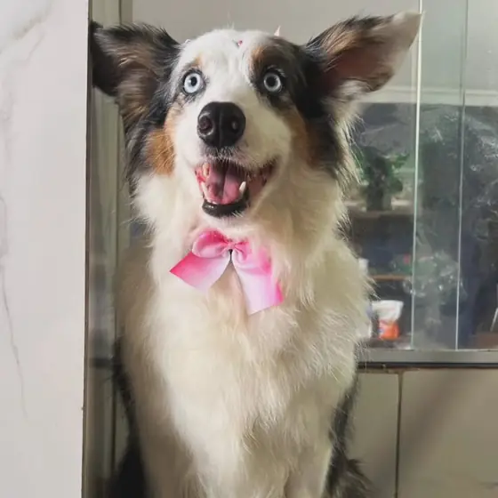
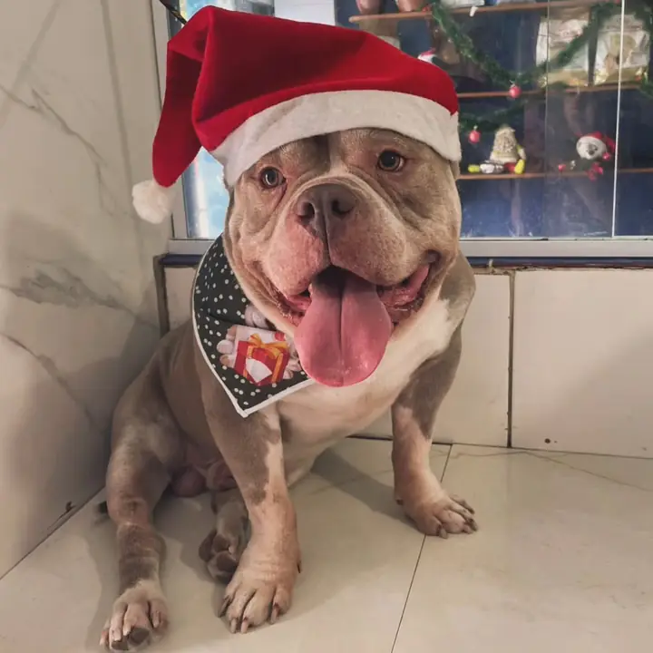
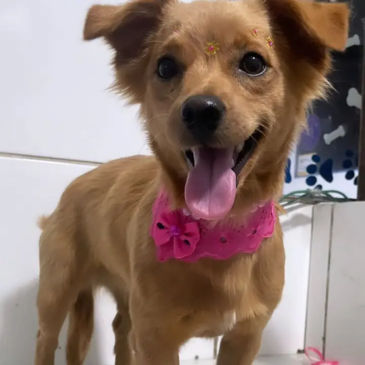
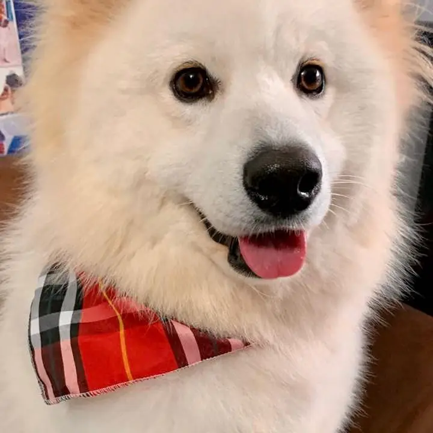
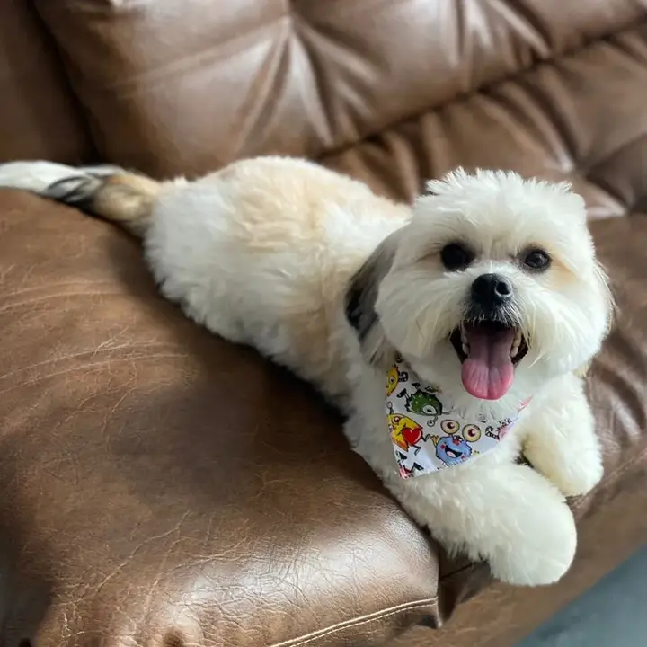

Pet shop no Centro de Cotia – SP
Banho e Tosa em Cotia com carinho de família
Petshop humanizado: cuidamos do seu bebê como se fosse nosso.
- ⭐ 5,0 no Google
- 🚐 Leva e traz
Agendamento direto com a nossa equipe pelo WhatsApp 💙

- Atendimento humanizado
- Leva e traz
- Produtos hipoalergênicos
- Pets soltinhos e à vontade
Banho e tosa no Centro de Cotia
Tudo feito com calma, produtos suaves e muito chamego. Escolha o cuidado do seu bebê:
Banho
Banho caprichado com produtos suaves, secagem com carinho e aquele cheirinho de pet limpinho.
Consulte pelo WhatsApp
Agendar este serviçoTosa
Tosa feita com calma e paciência, no estilo que combina com o seu bebê (e com você).
Consulte pelo WhatsApp
Agendar este serviçoTosa Higiênica
Aparamos barriguinha, patinhas e regiões íntimas para mais higiene e conforto no dia a dia.
Consulte pelo WhatsApp
Agendar este serviçoHidratação
Pelos macios, brilhantes e fáceis de desembaraçar. Um mimo que o seu pet merece.
Consulte pelo WhatsApp
Agendar este serviço- Perguntar no WhatsApp
E muito mais
Tem alguma dúvida ou procura outro cuidado? Pergunte pra gente 💬
Agendamento direto com a nossa equipe pelo WhatsApp 💙
Leva e traz: a gente busca e devolve seu pet em casa
Sem correria na sua rotina! Nossa equipe busca o seu bebê, cuida dele com todo o carinho e devolve cheiroso e feliz na sua porta.
- Consulte a disponibilidade para o seu bairro
Agendamento direto com a nossa equipe pelo WhatsApp 💙
- Buscamos em casa
- Banho com carinho
- Devolvemos cheiroso
Oferta especial pra você

O Natal está chegando
Que tal deixar o seu bebê cheiroso e lindo para as fotos de fim de ano com a família? Garanta o banho dele antes das festas.
Agendar o banho de NatalFamília Balyen
Alguns dos bebês que passaram por aqui (e saíram ainda mais lindos).

Sorriso de quem acabou de sair do banho 🐾 
Branquinho, fofinho e de bandana nova 
Banho tomado, agora é só relaxar no sofá
Veja com quanto carinho cuidamos de cada pet
Bastidores do banho e da secagem, do jeitinho que acontece aqui.
Hora do banho
Banho, secagem e bandana
Produtos hipoalergênicos, suaves para a pele
Usamos produtos hipoalergênicos Hydra, mais suaves para a pele do seu pet. Ideal para os bebês mais sensíveis.
5,0 no Google · +130 avaliações
Quem confia, recomenda
“Meus pets voltaram simplesmente perfeitos, cheirosos e muito bem cuidados. Trabalho impecável, feito com muito carinho e dedicação.”
Avaliação no Google
“Meu cachorro tinha ‘fama’ de ser bravo no antigo pet; no Balyen, quando chegamos, ele estava até dormindo. Fora que os pets ficam livres e à vontade no local.”
Avaliação no Google
“Atendimento maravilhoso, desde o início até a entrega do nosso animalzinho. Muito atenciosa, sinalizou alguns cuidados.”
Avaliação no Google
“A Chanel vinha tomando banho em outro pet shop e acabou ficando traumatizada… fiquei realmente muito feliz com a experiência.”
Avaliação no Google
Você sabia?
Banho demais também não é bom
A frequência ideal depende da raça, da pelagem e da rotina do pet. Banhos em excesso podem ressecar a pele, por isso o equilíbrio é tudo.
Tosa higiênica é saúde
Aparar os pelos da barriga, das partes íntimas e entre os dedinhos evita acúmulo de sujeira e umidade, ajuda a prevenir assaduras e até escorregões.
A pele do pet é diferente da nossa
Ela é mais fina e tem outro pH, por isso shampoo de gente não é indicado. Produtos próprios para pets (e hipoalergênicos para os sensíveis) fazem toda a diferença.
Como agendar
Clique em "Agendar"
Você cai direto no nosso WhatsApp, com a mensagem prontinha.
Combine dia e horário
Nossa equipe confirma o melhor horário para o seu bebê.
Traga seu pet
Ou use o leva e traz: a gente busca e devolve em casa.
Agendamento direto com a nossa equipe pelo WhatsApp 💙
Perguntas frequentes
Quanto tempo leva o banho?
Depende do porte, da pelagem e do serviço escolhido. Quando você agenda pelo WhatsApp, a nossa equipe já passa a previsão certinha para o seu pet.
Vocês atendem gatos?
Nosso logo tem um gatinho por um motivo 🐱 Chama a gente no WhatsApp para saber quais cuidados estão disponíveis para o seu gato.
Como funciona o leva e traz?
Nossa equipe busca o seu pet em casa no horário combinado e devolve depois do banho, cheiroso e feliz. Consulte a disponibilidade e as condições para o seu bairro pelo WhatsApp.
Que produtos vocês usam?
Usamos produtos hipoalergênicos da linha Hydra, mais suaves para a pele do seu pet. Se o seu bebê tem alguma sensibilidade, é só avisar a nossa equipe.
Precisa agendar?
Sim! Trabalhamos com horário marcado para dar toda a atenção que o seu bebê merece. É só chamar no WhatsApp e combinar o melhor dia.
Pet shop no Centro de Cotia
Rua Guido Fecchio, 125 – CentroCotia – SP, CEP 06700-105
Horários de atendimento
| Segunda a quinta | 9h às 18h |
|---|---|
| Sexta e sábado | 8h às 18h |
| Domingo | 9h às 12h30 |
Seu pet merece esse carinho
Chama a gente no WhatsApp e garanta o horário do seu bebê.
Agendar pelo WhatsAppAgendamento direto com a nossa equipe pelo WhatsApp 💙